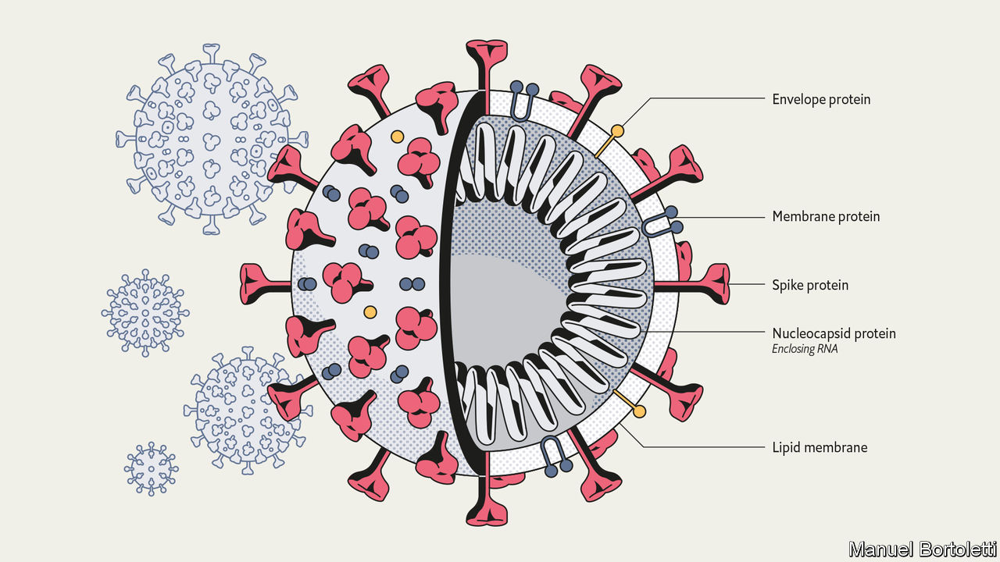
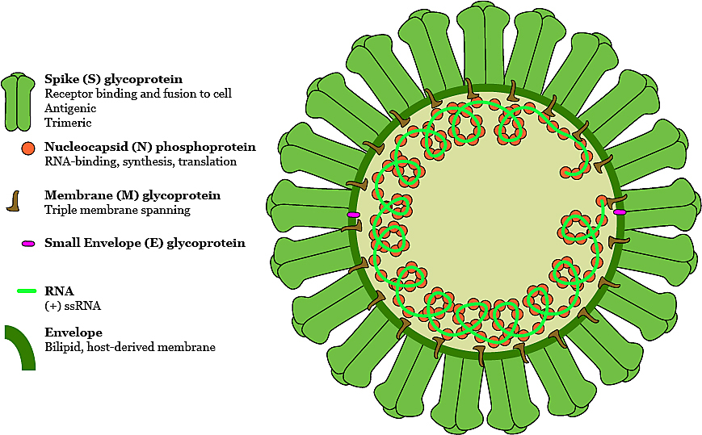
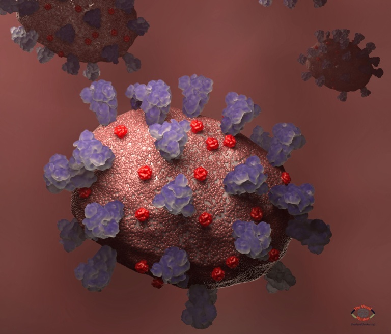

Imagen de un pulmon con neumonia
Anatomia de SRAS-CoV
Anatomia del MERS-CoV
Foto del covid19
Los coronavirus son una familia de virus que se
descubrió en la década de los 60 pero cuyo origen es
todavía desconocido. Sus diferentes tipos provocan distintas enfermedades, desde un resfriado
hasta
un síndrome respiratorio grave (una forma grave de neumonía).
Gran parte de los coronavirus no son peligrosos y se pueden tratar de forma eficaz. De hecho, la
mayoría de las personas contraen en algún momento de su vida un coronavirus, generalmente
durante su
infancia. Aunque son más frecuentes en otoño o invierno, se pueden adquirir en cualquier época
del
año.
El coronavirus debe su nombre al aspecto que presenta, ya que es muy parecido a una corona o un
halo. Se trata de un tipo de virus presente tanto en humanos como en animales.
En los últimos años se han descrito tres brotes epidémicos importantes causados por
coronavirus:
SRAS-CoV: El síndrome respiratorio agudo y grave (SRAS, también conocido como SARS y
SRAG) se
inició
en noviembre de 2002 en China, afectó a más de 8.000 personas en 37 países y provocó más de 700
muertes. La mortalidad del SRAS-Cov se ha cifrado en el 10% aproximadamente.
MERS-CoV: El coronavirus causante del síndrome respiratorio de Oriente Medio (MERS) fue
detectado
por primera vez en 2012 en Arabia Saudita. Se han notificado hasta octubre de 2019 más de 2.400
casos de infección en distintos países, con más de 800 muertes. La letalidad es, por tanto, del
35%.
COVID-19: A finales de diciembre de 2019 se notificaron los primeros casos de un nuevo
coronavirus
en la ciudad de Wuhan (China). Desde entonces el goteo de nuevos infectados por el virus
SARS-CoV-2
(inicialmente llamado 2019nCoV), que provoca el COVID-19, ha sido continuo y su transmisión de
persona a persona se ha acelerado. Los casos declarados de nemonía de Wuhan ya superan con
creces a
los de la epidemia de SRAS, pero la tasa de letalidad es más baja.
La Organización Mundial de la Salud (OMS) ha declarado la situación de pandemia. Hay personas
infectadas en la mayoría de los países y los profesionales sanitarios insisten en la necesidad
de
seguir las medidas preventivas y evitar la alarma social.
En España y otros países se ha decretado el estado de alarma y las autoridades sanitarias
insisten
en la necesidad de permanecer en casa para contener la transmisión.
En general, los síntomas principales de las infecciones por coronavirus pueden ser los siguientes. Dependerá del tipo de coronavirus y de la gravedad de la infección:
Tos.
Dolor de garganta.
Fiebre.
Dificultad para respirar (disnea).
Dolor de cabeza.
Escalofríos y malestar general.
Secreción y goteo nasal.
En espectro clínico de este tipo de infecciones varía desde la ausencia de síntomas hasta síntomas respiratorios leves o agudos. Esta tipología suele cursar con tos, fiebre y dificultades respiratorias. Es frecuente que haya neumonía y, en el caso del MERS, también se pueden registrar síntomas gastrointestinales, en especial, diarrea. Tal y como ocurre con el virus de la gripe, los síntomas más graves (y la mayor mortalidad) se registra tanto en personas mayores como en aquellos individuos con inmunodepresión o con enfermedades crónicas como diabetes, algunos tipos de cáncer o enfermedad pulmonar crónica. En los casos más graves pueden ocasionar insuficiencia respiratoria. En la pandemia de COVID-19 se ha constatado que en torno al 80% de las personas infectadas presentan síntomas leves.
No existe una vacuna contra el coronavirus humano que
causa resfriado, pero los casos más leves pueden
superarse siguiendo los mismos pasos que un catarro común. Esto no requiere intervención médica y
simplemente con lavarse las manos de forma frecuente, guardar reposo y beber líquidos de forma
abundante
los síntomas desaparecerán a los pocos días. También se pueden tomar analgésicos como ibuprofeno o
paracetamol para aliviar dolores de garganta o fiebre.
En casos de coronavirus SRAS, MERS CoV y COVID-19, suele ser conveniente el ingreso hospitalario en
los
casos graves. En los casos que los médicos lo consideran necesario, se administran antivirales,
dosis
altas de esteroides para reducir la inflamación pulmonar y un soporte respiratorio con oxígeno; en
ocasiones puede precisar antibióticos, pero solo en caso de que existan infecciones bacterianas
sobrevenidas, es decir, sobreinfección.
En resumen, este tipo de infecciones respiratorias se tratan con antivirales (según el criterio del
profesional sanitario) y medidas de soporte. El tratamiento se suele adaptar en función de la
gravedad
del paciente, ya que hay casos en los que se producen neumonías graves, pero en otros las
manifestaciones son leves.
Medico tratando a un paciente con Covid 19.
Lavate las manos frecuentemente
Contactanos para ponernos en contacto contigo